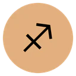

Share surfaces — Full Chart, Big Three, Compatibility, daily reading
Handoff §5. All personal cards are 1080×1350 client-rendered PNGs carrying no birth input; both DPRs are one bitmap (2× render, platform downscale). The Big Three card returns to the live share sheet (decision D-5 — code and tests exist today, unexposed). The daily reading deliberately keeps link-plus-OG sharing with no canvas card. Geometry mocks below are to scale; content is fixture-computed.
Big Three — 2× (left) and 1× (right). Discs 178 px at 2×; rows y 245 + 292·i; receipt mono y 1238; wordmark right. 1× criterion: the smallest mono (11 px effective) stays legible; fitText never crosses the gutter at 24-char labels.
SUN
Cancer
The part of you that chooses a direction.
MOON
Leo
What you need in order to feel steady.

RISING
Sagittarius
How people first meet you.
Computed in the browser · engine-verified positions · no birth details on this card
ZODIACS.ORG
SUN
Cancer
MOON
Leo
RISING
Sagittarius
Computed in the browser
ZODIACS.ORG
Compatibility card — the send-back's picture. Two columns at x 285/795 (2×), divider x 540, headline fit ≤54, "Tightest contacts" mono 22, three contacts. No numeric score exists or ever will. Content engine-computed from the fixture.
Full Chart card and the daily reading. Left: full-wheel geometry (wheel 780 px at 2×, discs row y 992, big-three line y 1138, receipt y 1272) — stands as shipped. Right: the daily page's share affordance — link sharing with the per-page 1200×630 OG card; no canvas card by decision.